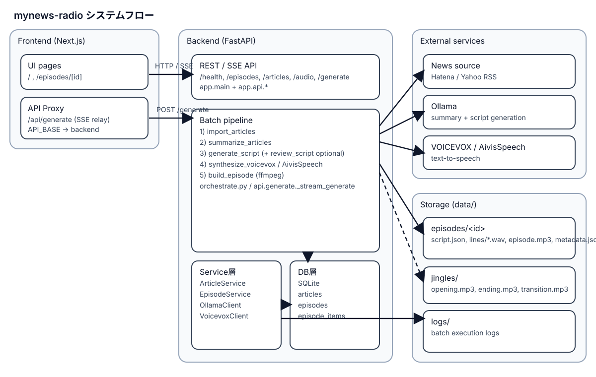
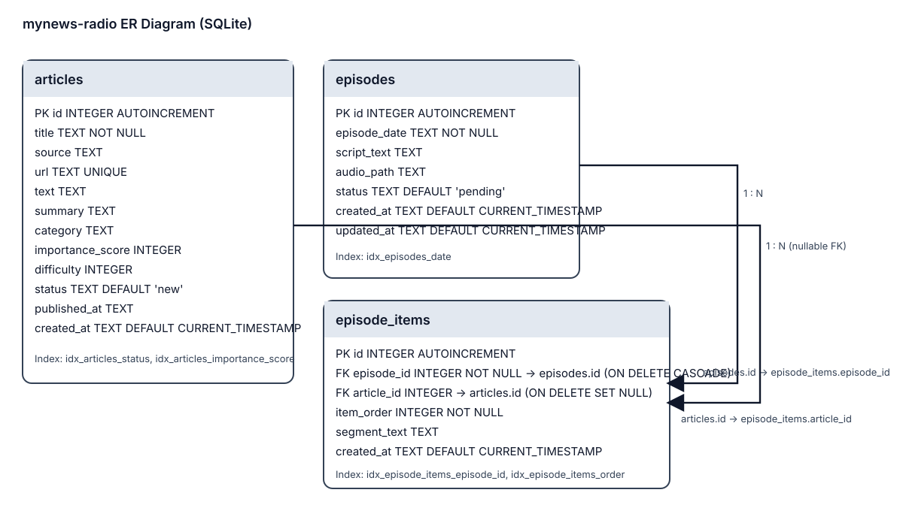

mynews-radio システムドキュメント
本ドキュメントは、takpanda/mynews-radio のコードベース（FastAPI / Next.js / SQLite）を解析し、
現在の構成・データモデル・処理フローを整理したものです。
1. システム概要
- 目的: ニュース記事を収集し、要約・台本化・音声合成してニュースラジオ番組（MP3）を生成する。
- バックエンド: FastAPI（
backend/app） - フロントエンド: Next.js 14（
frontend/app） - データストア: SQLite（
articles/episodes/episode_items） - 外部連携: Ollama（要約・台本生成）、VOICEVOX / AivisSpeech（音声合成）、ffmpeg（音声結合）
2. アーキテクチャ

図2-1: UI/API、バッチ処理、外部サービス、データ保存の関係
3. 処理フロー（主要）
| 段階 | 主なモジュール | 出力 |
|---|---|---|
| 記事取得 | app.batch.import_articles |
articles への取り込み（status=new） |
| 要約 | app.batch.summarize_articles |
summary / category / importance_score 更新（status=summarized） |
| 台本生成 | app.batch.generate_script |
script.json を生成、使用記事を status=used に更新 |
| （任意）台本レビュー | app.batch.review_script |
レビュー版 script.json / review.json |
| 音声合成 | app.batch.synthesize_voicevox |
lines/*.wav（transition前にジングル/無音挿入） |
| 音声統合 | app.batch.build_episode |
episode.mp3 / metadata.json / lineごとのstart_time |
4. APIエンドポイント
| メソッド | パス | 概要 |
|---|---|---|
| GET | /health | API稼働確認 |
| GET | /health/voicevox | VOICEVOX/AivisSpeech疎通確認 |
| GET | /health/ollama | Ollama疎通確認 |
| GET | /episodes | エピソード一覧 |
| GET | /episodes/latest | 最新エピソード |
| GET | /episodes/{id} | エピソード詳細 |
| GET | /episodes/{id}/script | 台本JSON |
| GET | /articles/{id} | 記事詳細 |
| GET | /audio/{episode_path:path} | Range対応音声配信 |
| POST | /generate | SSEで進捗通知しながら番組生成 |
5. データモデル（ER）

図5-1: SQLiteテーブル構造とリレーション
6. 生成物配置（代表）
data/episodes/<episode_id>/script.json: 生成台本data/episodes/<episode_id>/lines/*.wav: 行ごとの音声data/episodes/<episode_id>/episode.mp3: 最終音声data/episodes/<episode_id>/metadata.json: タイトル・長さ等
7. 補足
- フロントエンドは
frontend/app/api/generate/route.tsで API の SSE を透過中継。 - Docker Compose は
api(8010) とweb(3010) の2サービス構成。 - 本HTMLはインラインCSSのみを利用し、CDNなど外部リソースは使用していません。